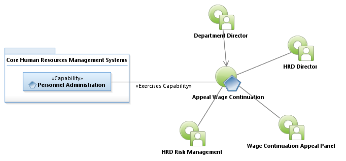
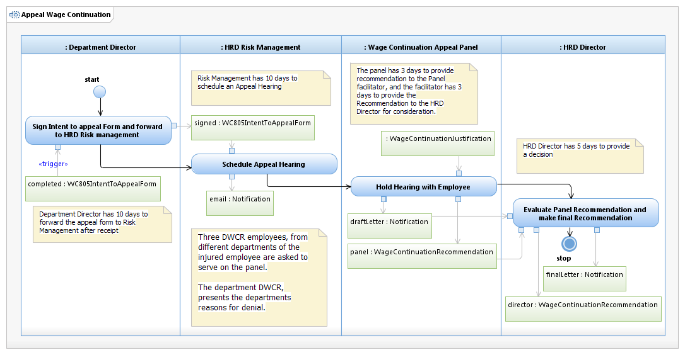

Use Case Model: Appeal Wage Continuation
Architect: Aaron Brown, IT Enterprise Architect
Date Last Modified: 03/26/2013
User Review: Leslie Milvo, Cindy Steffen, Shelly Sheppard
Date: 3/26/2013
An appeal form (WC805) has been posted by the employee requesting a formal appeal board be convened to access the wage continuation claim. Ultimately the HRD Director will issue a final decision on the Wage continuation, after the wage continuation appeal panel has presented their recommendation.
Follow link to Role Definitions

Use Case Model: Appeal Wage Continuation

Activity Model: Appeal Wage Continuation